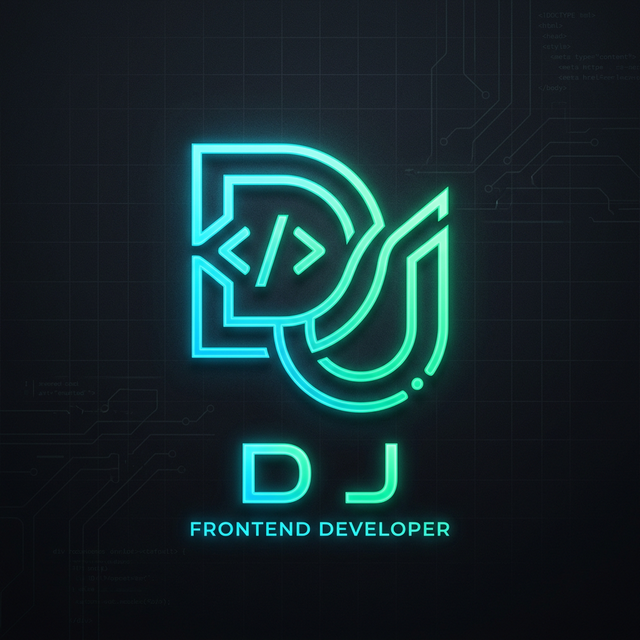

EDUCATION
B.Sc. Computer Science
Nazareth College of Arts & Science · 2023–2026

DEVAJ LET'S TALK ↗I'm Devaraj J — Software Developer_
B.Sc. Computer Science graduate building practical web applications, AI-powered experiences and reliable technical solutions.
I like building things that are useful, understanding how they work, and solving the problems that appear when real people use them.
My background sits between software development and technical support — two sides of technology that make me think about both the product and the person using it.
I've completed my B.Sc. Computer Science at Nazareth College of Arts & Science and built projects using React, Vite, Firebase, APIs and AI services.
I'm looking for a team where I can contribute as a Software Developer, Frontend / Full-Stack Developer or Technical Support Specialist while continuing to grow.
Nazareth College of Arts & Science · 2023–2026
Open to suitable opportunities beyond Chennai too.
Practical, curious and comfortable troubleshooting real problems.
Experience across production technical support and frontend development.
Domino's Pizza
Dream Code
Projects that show how I learn technologies by turning them into working products.
AI-powered learning platform for note/PDF analysis, interactive tutoring, spaced-repetition flashcards, voice interaction, focus sessions and study analytics.
Launch project ↗Responsive anime-focused web experience built around visual discovery, interactive content and Firebase-backed features.
View live ↗CRUD-oriented student records application focused on structured data management and database operations.
View GitHub ↗No fake percentage bars — just the technologies I actually work with.
Application development, debugging and practical problem solving.
Responsive interfaces, JavaScript and polished user experiences.
Frontend applications connected to Firebase, APIs and data.
Troubleshooting, incident resolution and operational reliability.
OPEN TO OPPORTUNITIES
Have a role, project or opportunity that matches my background? I'd be happy to connect.